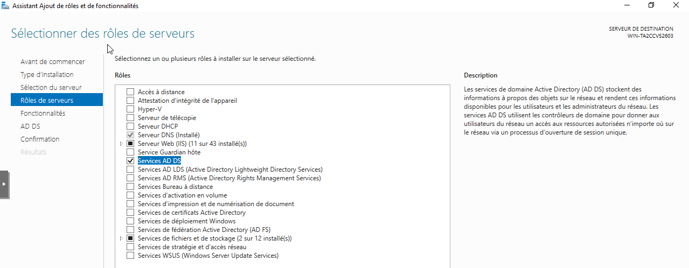
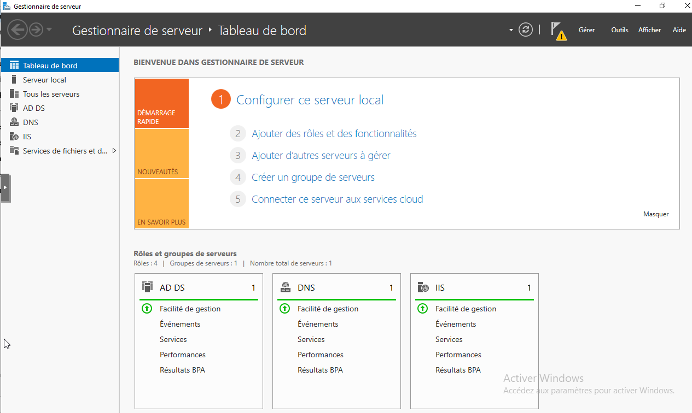
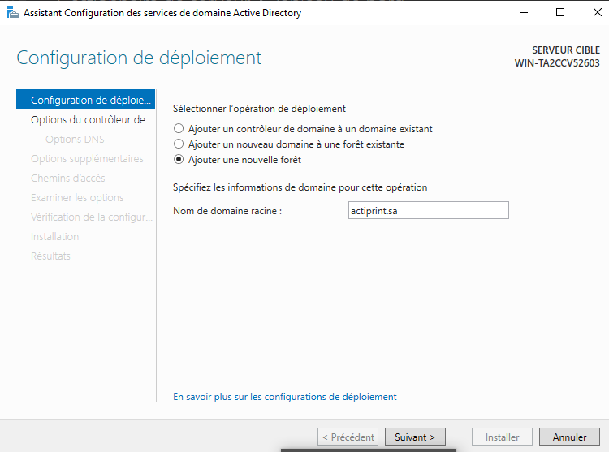
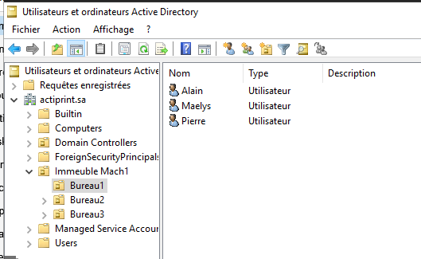
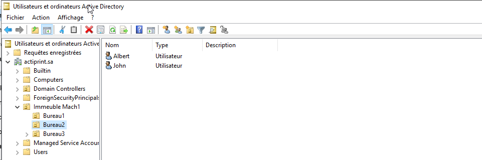

TP Active Directory — ESN Novatice / Actiprint SA
Contexte
L'ESN Novatice, dirigée par M. Ferrand, nous confie la mise en place d'un Active Directory pour son client Actiprint SA.
L'entreprise est hébergée dans l'immeuble Mach1, composé de trois bureaux :
| Utilisateur | Bureau | Fonction |
|---|---|---|
| Pierre | Bureau 1 — Direction et Comptabilité | Directeur Général |
| Alain | Bureau 1 — Direction et Comptabilité | Direction commerciale |
| Maelys | Bureau 1 — Direction et Comptabilité | Comptabilité |
| John | Bureau 2 — Support et Logistique | Support |
| Albert | Bureau 2 — Support et Logistique | Logistique |
| Deborah | Bureau 3 — Vente | Vente |
Installation du rôle AD DS
Installation du rôle Active Directory Domain Services via le Gestionnaire de serveur Windows Server 2019.
- Installation du rôle AD DS via le Gestionnaire de serveur
- Sélection des fonctionnalités requises

Fig. 1 — Sélection du rôle Active Directory Domain Services dans le Gestionnaire de serveur

Fig. 2 — Confirmation de l'installation du rôle AD DS
Promotion en contrôleur de domaine
Promotion du serveur en contrôleur de domaine principal avec création d'une nouvelle forêt actiprint.sa.
- Promotion du serveur en contrôleur de domaine principal
- Création d'une nouvelle forêt avec le domaine actiprint.sa
- Configuration des options du contrôleur de domaine
- Redémarrage et vérification

Fig. 3 — Assistant de promotion en contrôleur de domaine

Fig. 4 — Création de la nouvelle forêt avec le domaine actiprint.sa

Fig. 5 — Configuration des options du contrôleur de domaine

Fig. 6 — Redémarrage et confirmation de la promotion
Déclaration des ressources
Création des Unités d'Organisation (UO), des comptes utilisateurs et des ordinateurs dans la structure Active Directory d'actiprint.sa.
- Création de l'UO Immeuble Mach1 dans actiprint.sa
- Création des sous-UO Bureau1, Bureau2, Bureau3
- Création des utilisateurs dans chaque bureau (Pierre, Alain, Maelys, John, Albert, Deborah)
- Déclaration des ordinateurs dans les bonnes UO

Fig. 7 — Création de l'Unité d'Organisation Immeuble Mach1

Fig. 8 — Création des sous-UO Bureau1, Bureau2 et Bureau3

Fig. 9 — Comptes utilisateurs créés dans leurs bureaux respectifs

Fig. 10 — Ordinateurs déclarés dans les bonnes Unités d'Organisation
Jonction du poste client et test de connexion
Intégration du poste client au domaine actiprint.sa et vérification de l'authentification avec les comptes du domaine.
- Configuration du DNS client avec l'IP du serveur AD
- Jonction du poste client au domaine actiprint.sa
- Authentification avec le compte administrateur du domaine
- Test de connexion avec un compte utilisateur du domaine

Fig. 11 — Configuration du serveur DNS client pointant vers le contrôleur de domaine

Fig. 12 — Vérification de l'adresse IP du serveur Active Directory

Fig. 13 — Jonction du poste client au domaine actiprint.sa

Fig. 14 — Authentification avec le compte administrateur du domaine

Fig. 15 — Test de connexion avec un compte utilisateur du domaine
Compétences mobilisées
- Gérer le patrimoine informatique
- Mettre à disposition un service informatique
- Installation et configuration d'Active Directory Domain Services
- Promotion d'un serveur en contrôleur de domaine
- Création d'Unités d'Organisation (UO)
- Gestion des comptes utilisateurs et ordinateurs
- Jonction de postes clients au domaine
- Administration Windows Server 2019